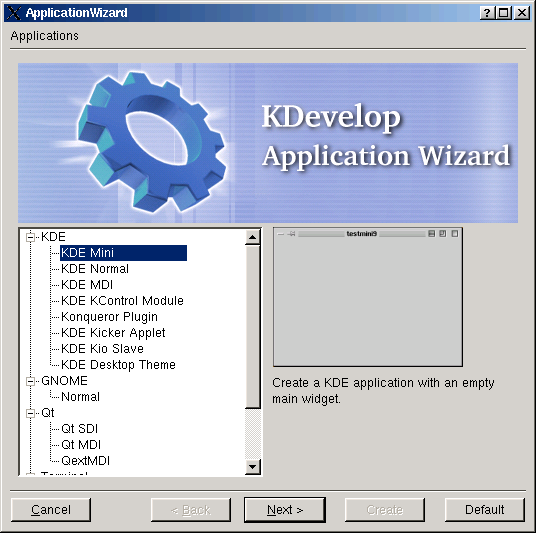
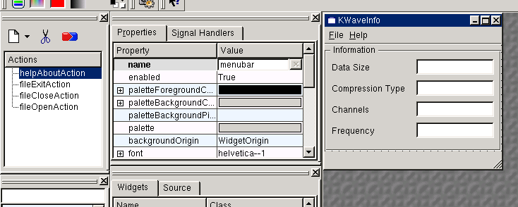
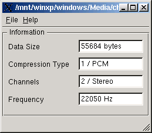

KDevelop является интегрированной средой разработки приложений под KDE/Qt. KDevelop (http://www.kdevelop.org) обладает необходимой функциональностью для удобной разработки программ. Среда включает в себя:
В данной среде разработки мы создадим небольшое приложение для просмотра свойств WAV файлов.
Разработка приложения производилась на компьютере Intel Celeron 900 (1795 bogomips) / 256 MB RAM / 20 GB HDD.
Программное обеспечение: ASPLinux 7.3 2.96-112 / gcc version 2.96 20000731 / KDevelop 2.1.2 / Qt 3.0.4.
Для изучения процесса разработки приложений с помощью KDevelop создадим небольшую утилиту просмотра свойств файлов формата WAV. Приложение управляется с помощью меню и отображает основные свойства звукового файла.
Приложение должно:
Запустим KDevelop и создадим новый проект с помощью меню Project->New. Появится форма (см. рисунок) на которой надо выбрать тип создаваемого приложения. В нашем случае надо выбрать тип KDE Mini.

На следующей странице надо заполнить все поля формы. В поле Project Name надо вписать KWaveInfo. Поле Project Directory автоматически дополнится. Нажимаем на [Next].
На следующей странице можно включить поддержку CVS для вашего проекта. В нашем случае ничего включать не надо. Нажимаем на [Next].
На следующих двух страницах можно отредактировать текст, который будет отображаться в каждом заголовочном файле и в каждом исходнике проекта. Нажимаем на [Next].
Теперь можно сгенерировать файлы проекта. Нажимаем на [Create] и дожидаемся завершения процесса генерации. Затем нажимаем на [Exit].
Теперь можно заниматься программированием...
Для создания главной формы приложения необходимо воспользоваться утилитой Qt Designer. Для этого в KDevelop с помощью меню File->New открываем диалог создания нового файла. В диалоге на вкладке General выбираем Qt Designer File (*.ui) и в поле Filename вводим mainform.ui. При нажатии на [OK] среда предложит открыть файл в ASCII режиме, от этого надо отказаться. В открывшемся Qt Designer'е выбираем тип создаваемой формы. В нашем варианте это будет Main Window.
Уберём все галочки в мастере создания формы. Таким образом мы получаем пустую панель. Если редактора свойств нет на экране, то вызываем его с помощью меню Window->Views->Property Editor/Signal Handler. Теперь необходимо заменить в свойствах формы её наименование (name) на MainForm и отображаемый заголовок (caption) на KWaveInfo.
Наше приложение будет управляться с помощью меню. Для создания меню надо нажать на правую кнопку мыши на форме и выбрать из контекстного меню элемент Add Menu Item. Переименуем появившийся элемент меню в &File. Также создадим элемент &Help. Для создания подэлементов элемента File необходимо воспользоваться так называемыми "действиями" (actions).
Если окна Actions нет на экране, то это исправляется с помощью меню Window->Views->Action Editor. В этом окне в контекстном меню выбираем элемент New Action, в окне появляется действие с именем Action. Выделяем его мышью и в редакторе свойств производим следующие действия:
Аналогично создаем действия fileOpenAction, fileCloseAction и helpAboutAction.
Термины "сигнал" и "слот" в данном случае означают в терминах программиста под Win32 "событие" и "обработчик" соответственно.
Для создания слота у формы надо вызвать её контекстное меню и выбрать элемент Slots..., это приводит к появлению окна редактирования слотов. С помощью кнопки [New Slot] создаём новый слот. В свойствах слота меняем newSlot() на ExitSlot() и нажимаем на кнопку [OK]. Аналогично создаём слоты OpenSlot(), CloseSlot() и AboutSlot().
Теперь надо соединить действие fileExitAction с созданным слотом ExitSlot(). Для этого выделяем действие в окне Actions и нажимаем на синекрасную кнопку расположенную выше списка действий. В открывшемся окне редактирования соединений в левом верхнем углу расположен список сигналов, которые может генерировать объект; в правом верхнем - список слотов главной формы; внизу окна отображаются созданные соединения.
Выделим сигнал activated() и слот ExitSlot(), нажмём на активировавшуюся кнопку [Connect]. В списке созданных соединений появится новая строка.
Делаем аналогичные действия для действий fileOpenAction, fileCloseAction и helpAboutAction.

Теперь необходимо созранить форму в каталоге проекта, например, ~/kwaveinfo/kwaveinfo/mainform.ui. При этом создаваемый файл перезапишет файл-пустышку созданный KDevelop. Закрываем Qt Designer и переходим в KDevelop.
Проект созданный мастером использует QWidget для отображения пустой формы. Чтобы подставить созданную форму надо сделать небольшие изменения в исходном тексте файлов kwaveinfo.h и kwaveinfo.cpp.
kwaveinfo.h, до:
#include [kapp.h] #include [qwidget.h] /** KWaveInfo is the base class of the project */ class KWaveInfo : public QWidget
kwaveinfo.h, после:
#include [kapp.h] #include [qwidget.h] #include "mainform.h" /** KWaveInfo is the base class of the project */ class KWaveInfo : public MainForm
kwaveinfo.cpp, до:
KWaveInfo::KWaveInfo(QWidget *parent, const char *name) : QWidget(parent, name)
kwaveinfo.cpp, после:
KWaveInfo::KWaveInfo(QWidget *parent, const char *name) : MainForm(parent, name)
Жирным шрифтом выделены изменения внесённые в код.
Ранее в форме был определён слот ExitSlot().
В коде на языке C++ объявление слота выглядит так:
virtual void ExitSlot();
Таким образом, его можно переопределить в класс KWaveInfo, так как данный класс был порождён от класса MainForm. Переопределяем:
// Закрываем приложение
void ExitSlot(void)
{
exit(0);
}
Теперь напишем код для слота OpenSlot():
#include [qfiledialog.h] ... // Отображаем диалог открытия файла QString Filename; Filename = QFileDialog::getOpenFileName( "/mnt/winxp", // Стартовый каталог "Wave Files (*.wav)", // Фильтр для файлов this, // Указатель на форму "openfiledialog", // Имя диалога "Choose a file to open...");// Заголовок диалога // Проверяем выбор пользователя if (Filename.isEmpty()) return; // Изменияем заголовок формы приложения setCaption(Filename + " - KWaveInfo"); // Вызываем функцию для отбработки указанного файла GetInfoFromFile(Filename);
Код для слота CloseSlot() будет выглядеть так:
// Удаляем информацию с формы
DisableAllElements();
edDataSize->setText("");
edCompression->setText("");
edChannels->setText("");
edFrequency->setText("");
// Восстанавливаем заголовок формы
setCaption("KWaveInfo");
Теперь напишем код, который будет выполняться при выборе меню Help->About:
void KWaveInfo::AboutSlot(void)
{
QMessageBox::about(this, "About KWaveInfo",
"KWaveInfo is a simple RIFF file format viewer\n\n"
"Copyright 2003 Ruslan Popov aka RaD.\n"
"This application is freeware. Use it as is. No warranty!\n\n"
"For technical support, call 99-00-00 or see http://ts.kmc.ru/\n");
}
Нижеприведённый код включает и отключает элементы на форме приложения:
void KWaveInfo::DisableAllElements(void)
{
edDataSize->setEnabled(FALSE);
edCompression->setEnabled(FALSE);
edChannels->setEnabled(FALSE);
edFrequency->setEnabled(FALSE);
}
void KWaveInfo::EnableAllElements(void)
{
edDataSize->setEnabled(TRUE);
edCompression->setEnabled(TRUE);
edChannels->setEnabled(TRUE);
edFrequency->setEnabled(TRUE);
}
Теперь можно прочитать заголовок WAV файла. Для этого создаётся структура описывающая формат заголовка и заполняется с помощью стандартных функций файловой системы. Полученные данные отображаются на форме приложения.
void KWaveInfo::GetInfoFromFile(QString Filename)
{
// Variables
RIFF sRiff;
FILE *hF;
QString Temp;
// Get header of wave file
if ((hF = fopen(Filename, "rb")) == NULL) return;
if (fgets((char *)&sRiff, sizeof(RIFF), hF) == NULL) return;
if (hF != NULL) fclose(hF);
// Check file format
if (strncmp(sRiff.Riff, "RIFF", 4) != 0) return;
// Show information
EnableAllElements();
Temp = Temp.setNum(sRiff.DataSize);
edDataSize->setText(Temp + " bytes");
Temp = Temp.setNum(sRiff.CompressType);
switch(sRiff.CompressType)
{
case 0x01: Temp += " / PCM"; break;
case 0x02: Temp += " / MS ADPCM"; break;
case 0x03: Temp += " / Float PCM"; break;
case 0x06: Temp += " / a-law"; break;
case 0x07: Temp += " / u-law"; break;
case 0x11: Temp += " / IMA ADPCM"; break;
case 0x12: Temp += " / Videologic"; break;
case 0x13: Temp += " / Sierra ADPCM"; break;
case 0x20: Temp += " / Yamaha ADPCM"; break;
case 0x55: Temp += " / MPEG"; break;
default: Temp += " / Unknown"; break;
}
edCompression->setText(Temp);
Temp = Temp.setNum(sRiff.Channels);
switch (sRiff.Channels)
{
case 1: Temp += " / Mono"; break;
case 2: Temp += " / Stereo"; break;
case 4: Temp += " / Quadro"; break;
default: Temp += " / Unknown"; break;
}
edChannels->setText(Temp);
Temp = Temp.setNum(sRiff.Frequency);
edFrequency->setText(Temp + " Hz");
}
Вот так выглядит созданное приложение:

Ниже приведён код, файлов в которые мы вносили изменения. Остальные файлы проекта, после их автоматической генерации остались без изменения.
/***************************************************************************
kwaveinfo.h - description
-------------------
begin : Суб Янв 11 02:30:19 KRAT 2003
copyright : (C) 2003 by Ruslan Popov aka RaD
email : rad@kmc.ru
***************************************************************************/
/***************************************************************************
* *
* This program is free software; you can redistribute it and/or modify *
* it under the terms of the GNU General Public License as published by *
* the Free Software Foundation; either version 2 of the License, or *
* (at your option) any later version. *
* *
***************************************************************************/
#ifndef KWAVEINFO_H
#define KWAVEINFO_H
#ifdef HAVE_CONFIG_H
#include [config.h]
#endif
#include [kapp.h]
#include [qwidget.h]
#include "mainform.h"
#define UINT unsigned int
#define WORD unsigned short int
#define BYTE unsigned char
// RIFF WAVE header's structure
typedef struct {
char Riff[4];
UINT FileSize;
char Wave[4];
char Fmt[4];
UINT FormatSize;
WORD CompressType;
WORD Channels;
UINT Frequency;
UINT AvgBytesPerSec;
WORD BytesPerSample;
WORD BitsPerSample;
char Data[4];
UINT DataSize;
} RIFF, *PRIFF;
/** KWaveInfo is the base class of the project */
class KWaveInfo : public MainForm
{
Q_OBJECT
public:
/** construtor */
KWaveInfo(QWidget* parent=0, const char *name=0);
/** destructor */
~KWaveInfo();
// Define form's slots
void OpenSlot(void);
void CloseSlot(void);
void ExitSlot(void);
void AboutSlot(void);
// Define functions
void DisableAllElements(void);
void EnableAllElements(void);
void GetInfoFromFile(QString Filename);
};
#endif
/***************************************************************************
kwaveinfo.cpp - description
-------------------
begin : Суб Янв 11 02:30:19 KRAT 2003
copyright : (C) 2003 by Ruslan Popov aka RaD
email : rad@kmc.ru
***************************************************************************/
/***************************************************************************
* *
* This program is free software; you can redistribute it and/or modify *
* it under the terms of the GNU General Public License as published by *
* the Free Software Foundation; either version 2 of the License, or *
* (at your option) any later version. *
* *
***************************************************************************/
#include [qfiledialog.h]
#include [qlineedit.h]
#include [qmessagebox.h]
#include [stdio.h]
#include [string.h]
#include "kwaveinfo.h"
#define CAPTION "KWaveInfo"
KWaveInfo::KWaveInfo(QWidget *parent, const char *name) : MainForm(parent, name)
{
DisableAllElements();
}
KWaveInfo::~KWaveInfo()
{
}
void KWaveInfo::OpenSlot(void)
{
// Open File Dialog
QString Filename;
Filename = QFileDialog::getOpenFileName(
"/mnt/winxp", // Start path
"Wave Files (*.wav)", // Filter
this, // Pointer to parent window
"openfiledialog", // Dialog's name
"Choose a file to open...");// Dialog's caption
// Check existence of filename
if (Filename.isEmpty()) return;
// Set caption
setCaption(Filename + " - " + CAPTION);
// Get WAV format information
GetInfoFromFile(Filename);
}
void KWaveInfo::CloseSlot(void)
{
// Remove information
DisableAllElements();
edDataSize->setText("");
edCompression->setText("");
edChannels->setText("");
edFrequency->setText("");
// Set caption
setCaption(CAPTION);
}
void KWaveInfo::ExitSlot(void)
{
// Exit application
exit(0);
}
void KWaveInfo::AboutSlot(void)
{
QMessageBox::about(this, "About KWaveInfo",
"KWaveInfo is a simple RIFF file format viewer\n\n"
"Copyright 2003 Ruslan Popov aka RaD.\n"
"This application is freeware. Use it as is. No warranty!\n\n"
"For technical support, call 99-00-00 or see http://ts.kmc.ru/\n");
}
void KWaveInfo::DisableAllElements(void)
{
edDataSize->setEnabled(FALSE);
edCompression->setEnabled(FALSE);
edChannels->setEnabled(FALSE);
edFrequency->setEnabled(FALSE);
}
void KWaveInfo::EnableAllElements(void)
{
edDataSize->setEnabled(TRUE);
edCompression->setEnabled(TRUE);
edChannels->setEnabled(TRUE);
edFrequency->setEnabled(TRUE);
}
void KWaveInfo::GetInfoFromFile(QString Filename)
{
// Variables
RIFF sRiff;
FILE *hF;
QString Temp;
// Get header of wave file
if ((hF = fopen(Filename, "rb")) == NULL) return;
if (fgets((char *)&sRiff, sizeof(RIFF), hF) == NULL) return;
if (hF != NULL) fclose(hF);
// Check file format
if (strncmp(sRiff.Riff, "RIFF", 4) != 0) return;
// Show information
EnableAllElements();
Temp = Temp.setNum(sRiff.DataSize);
edDataSize->setText(Temp + " bytes");
Temp = Temp.setNum(sRiff.CompressType);
switch(sRiff.CompressType)
{
case 0x01: Temp += " / PCM"; break;
case 0x02: Temp += " / MS ADPCM"; break;
case 0x03: Temp += " / Float PCM"; break;
case 0x06: Temp += " / a-law"; break;
case 0x07: Temp += " / u-law"; break;
case 0x11: Temp += " / IMA ADPCM"; break;
case 0x12: Temp += " / Videologic"; break;
case 0x13: Temp += " / Sierra ADPCM"; break;
case 0x20: Temp += " / Yamaha ADPCM"; break;
case 0x55: Temp += " / MPEG"; break;
default: Temp += " / Unknown"; break;
}
edCompression->setText(Temp);
Temp = Temp.setNum(sRiff.Channels);
switch (sRiff.Channels)
{
case 1: Temp += " / Mono"; break;
case 2: Temp += " / Stereo"; break;
case 4: Temp += " / Quadro"; break;
default: Temp += " / Unknown"; break;
}
edChannels->setText(Temp);
Temp = Temp.setNum(sRiff.Frequency);
edFrequency->setText(Temp + " Hz");
}
i18n является системой интернационализации, которая используется для работы с интернационализированными (ну и словечко :) версиями приложений или проектов. Обычно приложения поддерживают только родной язык автора, данное обстоятельство немножко напрягает людей не знакомых с языком автора. Цель интернационализации представлять приложение на языке пользователя.
Одной из задач KDE является предоставление приложений пользователю на его родном языке и упростить для разработчика процесс перевода своего приложения.
Технически, это реализовано в стандарте KDE File System, который включает в себя поддержку локализации и предоставляет приложениям поддержку интернационализации через использование класса KLocale библиотеки KDE-core.
Со стороны разработчика надо сделать следующее:
Это всё, что надо будет помнить при программировании. Отметьте, что не следует интернационализировать конфигурационные строки, которые используются KConfig.
KDevelop облегчает жизнь разработчика. При создании проекта в главный каталог проекта добавляется каталог po. Затем в этот каталог добавляется kwaveinfo.pot (что-то я не нашёл такого у себя). Этот файл должен содержать все строки для которых был использован i18n макрос, теперь вы должны писать свой код, не забывая использовать i18n макрос при работе с отображаемыми строками. Добавлять строки в файл надо время от времени с помощью меню Project->Make messages and merge.
Добавить новый язык для приложения можно с помощью меню Project->Add new Translation File, в появившемся окне надо выбрать требующийся язык. Соответствующий, в нашем случае русский, файл ru.po появится в каталоге po проекта.
После этого в дереве KWaveInfo, которое находится на вкладке Groups, в элементе Translations появится элемент ru.po. Кликнем на него, на вопрос открывать файл как текст, скажем нет. Откроется приложение KBabel...
Но вся проблема в том, что при создании файла перевода у меня выскакивает следующая ошибка:
gmake -f admin/Makefile.common package-messages
gmake[1]: Вход в каталог `/root/ProjectsQt/kwaveinfo'
./kwaveinfo
./kwaveinfo has *.rc or *.ui files, but not correct messages line
gmake[2]: Вход в каталог `/root/ProjectsQt/kwaveinfo/kwaveinfo'
xgettext: ошибка открытия файла "/include/kde.pot" для чтения: Нет такого файла или каталога
gmake[2]: *** [messages] Ошибка 1
gmake[2]: Выход из каталог `/root/ProjectsQt/kwaveinfo/kwaveinfo'
gmake[1]: Выход из каталог `/root/ProjectsQt/kwaveinfo'
gmake -C po merge
gmake[1]: Вход в каталог `/root/ProjectsQt/kwaveinfo/po'
gmake -f ../admin/Makefile.common package-merge POFILES="ru.po" PACKAGE=kwaveinfo
gmake[2]: Вход в каталог `/root/ProjectsQt/kwaveinfo/po'
admin/cvs.sh: admin/cvs.sh: Нет такого файла или каталога
gmake[2]: *** [package-merge] Ошибка 127
gmake[2]: Выход из каталог `/root/ProjectsQt/kwaveinfo/po'
gmake[1]: *** [merge] Ошибка 2
gmake[1]: Выход из каталог `/root/ProjectsQt/kwaveinfo/po'
gmake: *** [package-messages] Ошибка 2
*** failed ***
Надо как-то решить проблему! Наверное, я просто дождусь выхода следующей версии KDevelop.
Надеюсь эта обзорная статья показала, что под Linux/Qt/KDE можно создавать приложения, пользуясь достаточно удобной интегрированной средой разработки.